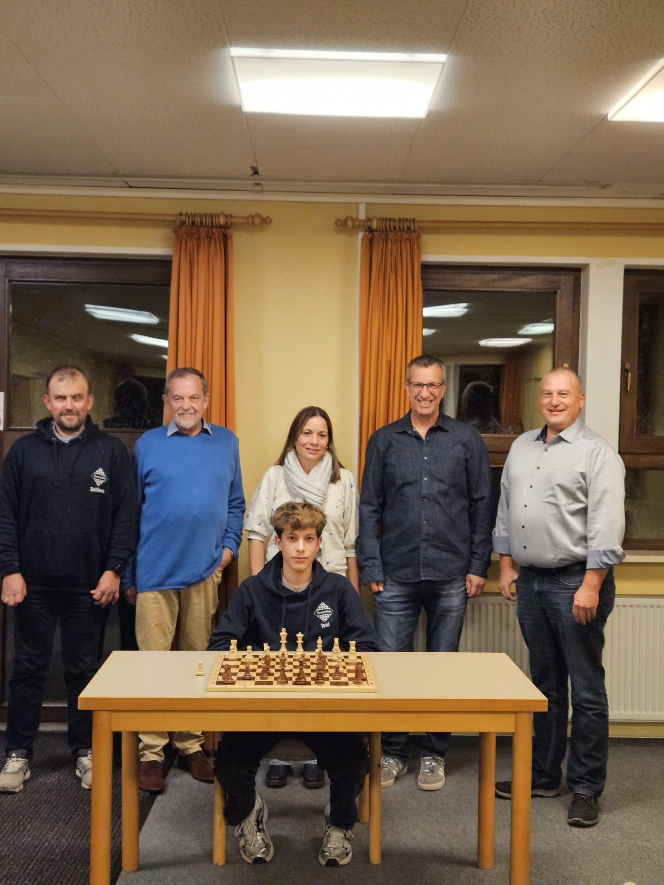
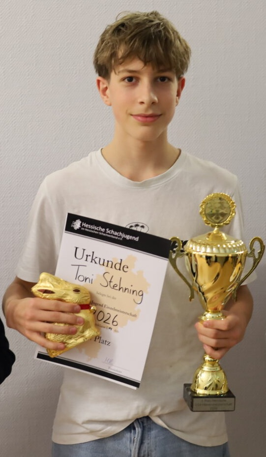
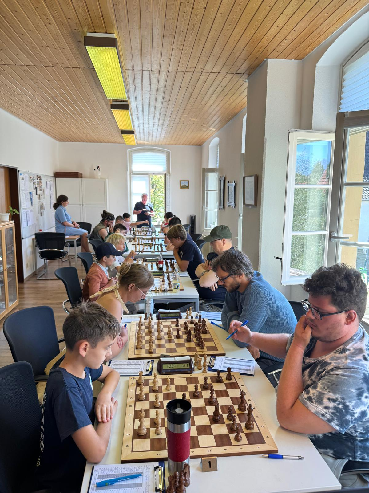

Aktuelles aus dem Verein
+++ Turniere im Jubiläumsjahr +++
Die Schachfreunde Braunfels e.V. wurden im Herbst des Jahres 1963 gegründet. Im nächsten Jahr feiert der Verein also sein 64. Jubiläum. Das nutzen wir zum Anlass für einige Events:
Stadtmeisterschaft (Februar bis April): Ausschreibung
Neujahrsblitz am 8. Januar: Ausschreibung
+++ 02.-13.11.2026: Toni Stehning bei den Europäischen Meisterschaften +++

Toni Stehning, Jugendspieler der Schachfreunde
Braunfels, vertritt zur Zeit bei den
Schach-Europameisterschaften in Griechenland die
deutschen Farben. Die Meisterschaften finden von
2.-13.11. auf der Insel Kreta statt und werden in 9
Runden im Schweizer-System ausgetragen, bei 90 Minuten
pro Spieler und Partie. Gespielt wird in sechs
Altersklassen von U8 bis U18 wobei Toni in der
Altersklasse U14 startet. Sein Weg zu den
Europameisterschaften begann bei den hessischen
Meisterschaften wo er als Kaderspieler gesetzt war und
wo er Sieger seiner Altersklasse wurde, damit hatte er
sich für die deutschen Meisterschaften in
Willingen qualifiziert. Auch dort glänzte er durch
überragende Leistungen mit denen er sich auf
internationaler Ebene qualifizierte. 1250 Jungen und
Mädchen aus 49 Nationen beteiligen sich an dem
Turnier, angeführt wird die deutsche Delegation
von dem 18jährigen Großmeister Marius Deuer
der auch im gesamten Turnier in der Rangliste ganz oben
steht.
Von den neun zu spielenden Runden haben die Teilnehmer
bislang fünf Runden absolviert und Toni stellt
eindrücklich unter Beweis, dass er zurecht auf
internationaler Ebene eingesetzt ist. Dabei sind seine
Gegner fast durchweg teilweise deutlich höher
gesetzt als er, so konnte er gleich in der ersten Runde
gegen den Fidemeister Damir Bulgak (ELO 2317)
remisieren, in Runde zwei folgte dann eine Niederlage
aus der er aber scheinbar gestärkt heraus ging:
die drei folgenden Begegnungen gegen Wiktor Kiszik (ELO
1973, Polen), Guy Belkovski (ELO 2214, Israel) und
Viktor Lilliehook (ELO 2197, Schweden) konnte er
allesamt siegreich beenden. Zuletzt überzeugte er
mit einem Remis gegen den Fidemeister Ali Varyemez (ELO
2267, Türkei). Damit belegt er aktuell mit 4 aus 6
Punkten Rang 22, bei 65 Teilnehmern in seiner Gruppe.
Igor Shevchenko, der zweite Deutsche in der Gruppe,
belegt mit drei Punkten Rang 62.
Diverse Links:
Offizielle Turnierseite
Ergebnisse und
Tabellen
Vorbericht der European
Chess Union
Ergebnis Deutsche
Schachmeisterschaft 2026, U14
Bild 1: Toni Stehning am Brett. Im Hintergrund, von
links nach rechts: Sebastian Swoboda (1. Vorsitzender),
Joachim Schmidt (1. Stadtrat), Sabine Stehning
(Mutter), Ralf Stehning (Vater und Jugendleiter),
Christian Breithecker (Bürgermeister).
+++ 08.11.2026: 4. Runde Landesklasse West +++
Die Schachfreunde aus Braunfels, die ihr Spitzenbrett ersetzen mussten, setzten sich knapp gegen einen zur Zeit etwas glücklos agierenden Gastgeber aus Idstein durch und behaupten dadurch auch in der vierten Runde der Landesklasse ihren ersten Tabellenplatz, haben aber mit Biebertal einen Verfolger im Nacken der durch einen Kantersieg bis auf einen halben Brettpunkt aufschließen konnte. Den Reigen im Kampf um die Brettpunkt eröffnete Felix Hilgert mit den schwarzen Steinen nach einer Stunde Spielzeit mit einem sicheren Remis, kurz darauf folgte jedoch eine Verlustpartie und Braunfels lag zurück, blieb jedoch dran als Mario Baumhackel, der in eine Zugwiederholung einwilligen musste, mit einem Remis abschloss. Mit einem weiteren Partiegewinn durch Achim Schlitter glichen die Schloßstädter aus und durch den Sieg von Ernest Grass gingen die Braunfelser nach drei Stunden Spielzeit erstmals in Führung. Danach erhöhte Joachim Becher auf 3.5, Routinier Andreas Diehl hatte inzwischen eine Mehrfigur und sicherte kurze Zeit später den Braunfelser Mannschaftssieg, die Begegnung war entschieden, der letzte Partiegewinn von Idstein bedeutete lediglich noch Ergebniskosmetik.
+++ 06.11.2026: Halbfinale Schlosspokal +++
Die Ergebnisse des Halbfinales lauten:
| Badri Darsania | - | Felix Hilgert | 1 - 0 |
| Andreas Diehl | - | Achim Kriesch | 1 - 0 |
Im Finale (am 4. Dezember) spielt Badri Darsania gegen Andreas Diehl. Die Farben werden zeitnah ausgelost.
Die Ergebnisse früherer Runden finden Sie hier.
+++ 23.10.2026: Vereinsmeisterschaft +++
Ergebnisse der siebten Runde:
| Andreas Diehl | - | Michel Stehning | 1 - 0 |
| Felix Hilgert | - | Ralf Stehning | ½ - ½ |
| Sam Droß | - | Hans-Peter Ewin | ½ - ½ |
| Toni Stehning | - | Vitali Makstadt | 1 - 0 |
| Christian Kokoska | - | Matthias Stelter | 0 - 1 |
| Valentin Stripling | - | Christoph Schmitz | 0 - 1 |
Tabelle nach
der siebten Runde
Die Ergebnisse früherer Runden finden Sie hier.
Die nächste Runde findet am 13. November statt.
+++ 04.04.2026: Starker Auftritt bei den Hessischen Jugend-Einzelmeisterschaften +++

Bad Homburg. Bei den hessischen
Jugend-Einzelmeisterschaften in Bad Homburg, die vom
29. März bis zum 4. April stattfanden, zeigten
zahlreiche Nachwuchstalente ihr Können —
allen voran Toni Stehning, der in der Altersklasse U 14
für ein herausragendes Ergebnis sorgte. Über
mehrere Tage hinweg traten die besten Jugendlichen aus
ganz Hessen im Schach gegeneinander an, um die
begehrten Titel in ihren jeweiligen Altersklassen zu
erringen. Die Veranstaltung war geprägt von
spannenden Wettkämpfen, hoher Leistungsdichte und
großem sportlichem Ehrgeiz.
In der U14-Konkurrenz überzeugte Toni Stehning mit
einer konstant starken Leistung. Von insgesamt sieben
Partien konnte er vier gewinnen und spielte dreimal
Remis, womit er ungeschlagen blieb. Damit sammelte er
starke 5,5 Punkte aus 7 Spielen. Runde für Runde
setzte er sich gegen starke Gegner durch und bewies
dabei nicht nur sein spielerisches Talent, sondern auch
bemerkenswerte Nervenstärke. Besonders in
entscheidenden Momenten behielt er die Ruhe und konnte
enge Partien für sich entscheiden. Am Ende wurde
der Einsatz des Braunfelser Nachwuchsspielers belohnt:
Toni Stehning krönte sein Spiel mit einem ersten
Platz und ist Hessenmeister in der U14. Er
qualifizierte sich damit für die Deutschen
Jugendeinzelmeisterschaften im Schach, die vom 23. bis
31. Mai in Willingen stattfinden werden.
Doch auch ein weiterer Spieler von den Schachfreunden
aus Braunfels machte auf sich aufmerksam: Michel
Stehning zeigte in der Altersklasse U18 eine sehr
ansprechende Leistung. Mit konzentriertem Spiel und
großem Einsatz behauptete er sich in einem
starken Teilnehmerfeld und belegte am Ende einen
erfolgreichen 13. Platz, was seinen positiven
Turnierverlauf unterstreicht.
Die Hessische Schachjugend hat während der
gesamten Woche für eine ausgezeichnete
Organisation des Zentralen Lagers in Bad Homburg
gesorgt. Die angenehme Turnieratmosphäre und das
abwechslungsreiche Rahmenprogramm haben die hessischen
Einzelmeisterschaften zu einem Highlight gemacht.
Ebenso haben die Schachfreunde aus Braunfels u.a. mit
ihrer Jugendarbeit die schachlichen Erfolge ihrer
Nachwuchsspieler unterstützt.
Bericht von Ralf Stehning.
+++ 17.01.2026: Neues vom Einsteiger-Cup Mittelhessen +++

Am 17. August 2025 war der Beginn des Einsteiger-Cups,
nachdem er am 28. Juni vielversprechend getestet wurde.
Es haben sich 19 Spieler angemeldet, es gab also
fünf Gruppen á vier Spieler und ein
Freilos. Braunfels war mit Günter Hilgert, Lukas
Averianov und Wladislav Geist vertreten. Wladislav war
in der stärksten Gruppe und gewann eine Partie.
Lukas ging in beiden Partien als Sieger hervor.
Günter musste sich leider in beiden Spielen
geschlagen geben.
Am 27. September ging der Einsteiger-Cup in Braunfels
weiter. Für die Gastgeber spielten Günter
Hilgert, Guiseppe und Christian Kokoska. In Runde 1
spielten Günter und Guiseppe gegeneinander -
Günter ging als Sieger hervor, Christian verlor
seine Partie. In der zweiten Partie gingen alle drei
leider leer aus.
Am 1. November war Marburg der Ausrichter des
Einsteiger-Cups. Günter Hilgert und Wladislav
Geist gingen für Braunfels an den Start.
Während Günter beide Partien für sich
entscheiden konnte, hat Wladislav beide Partien
verloren.
Am 17. Januar fand im Kulturzentrum Hungen der erste
Spieltag des neuen Jahres statt. Mit Sam Droß,
Wladislav Geist und Guiseppe Totaro gab es drei
Braunfelser Teilnehmer. Während Sam gegen
Wladislav in der höchsten Gruppe gewann, konnte
Guiseppe auch einen Sieg einfahren. Leider gingen
Wladislav und Guiseppe in der nächste Partie leer
aus, Sam hingegen konnte auch das zweite Spiel für
sich entscheiden. Der nächste Termin ist am 07.
März in Heuchelheim.
+++ Kalender +++
+++ Allgemeine Informationen +++
Spiellokale:
- Haus des Gastes, Fürst-Ferdinand-Straße 4A, 35619 Braunfels (Räume Bagnols, Newbury und Rohrmoos-Untertal im Nebengebäude über der Stadtbücherei)
- Kurparktreff Braunfels, Am Kurpark 6B, 35619 Braunfels (Ausweichmöglichkeit)
- Jugendtraining (Montags): Öffnung um 17:25, Beginn um 17:30 (bis 19:00)
- Vereinsabend (Freitags): Öffnung um 19:00, Turniere starten um 20:15
- Mannschaftswettkämpfe (Sonntags): Öffnung um 13:30, Partien starten um 14:00